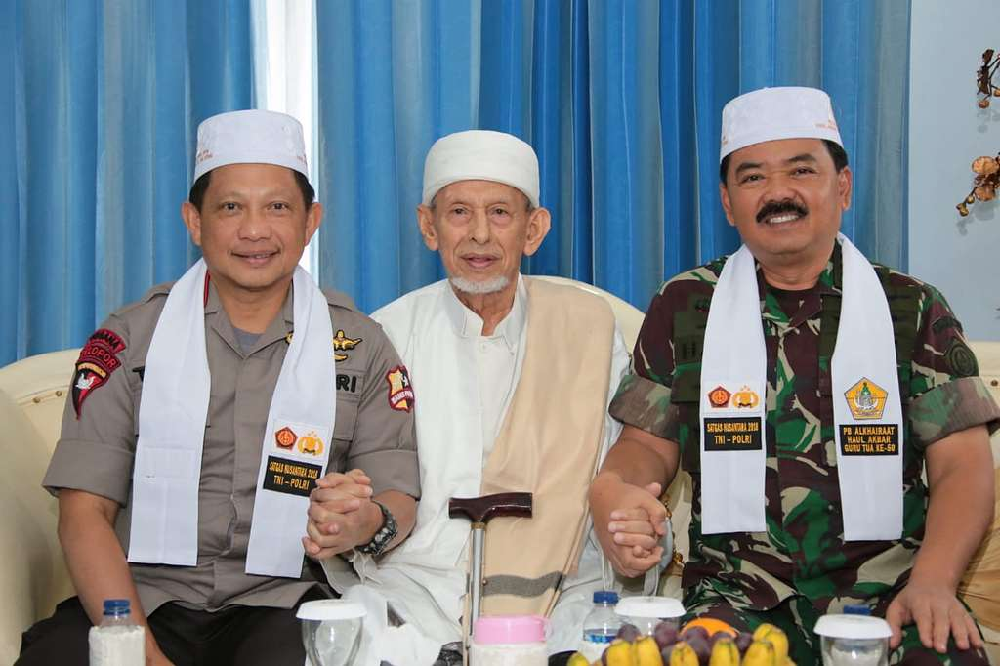
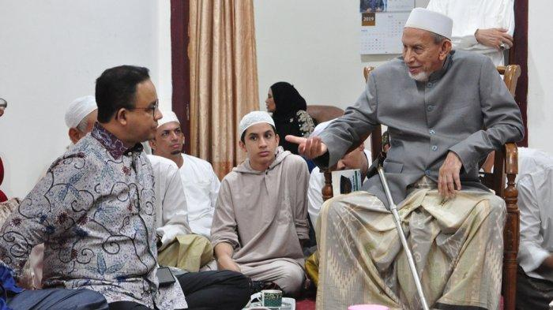

Galeri Kisah

Masa Muda Penuh Ilmu
Foto ini mengabadikan Habib Saggaf muda bersama kakeknya, Habib Idrus bin Salim Aljufri (Guru Tua)...
Selengkapnya
Habib Saggaf Bersama Prabowo Subianto
Foto ini mengabadikan Habib Saggaf bersama Prabowo Subianto...
Selengkapnya

Merangkul Semua Kalangan
Dalam gambar ini, Habib Saggaf duduk bersama Panglima TNI dan Kapolri...
Selengkapnya


Menjaga Silaturahmi Kebangsaan
Kunjungan Wakil Presiden RI ke-10 dan ke-12, Jusuf Kalla...
Selengkapnya
Muktamar IX Alkhairaat
Kunjungan Presiden ke-6 Susilo Bambang Yudhoyono ke Pondok Pesantren Alkhairaat...
Selengkapnya